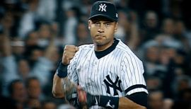

Javier Báez, shortstop de los Cachorros de Chicago, será la nueva portada del MLB The Show 20, informó el videojuego de beisbol por medio de sus redes sociales.
El pelotero de 26 años será el segundo puertorriqueño en ser la imagen del juego para Playstation, después de Bernie Williams, ex jardinero de los Yanquis de Nueva York, quien lo hizo en la primera edición MLB 98.